Capítulo 14 Planteamiento y Solución de Problemas: Álgebra y Geometría Analítica
14.1 Introducción
Bienvenido a la Evaluación Interactiva: Planteamiento y Solución de Problemas (Ev_PlanteoYSolProblemas_v1).
Este cuestionario interactivo consta de 69 preguntas autoevaluables en formato de afirmaciones verdaderas y falsas (50% y 50%).
Instrucciones Generales:
* Trabaja cada problema con lápiz y papel.
* Cada pregunta tiene exactamente 6 opciones (3 afirmaciones verdaderas y 3 afirmaciones falsas). Debes seleccionar únicamente las 3 afirmaciones verdaderas para obtener el puntaje completo.
* Puedes reintentar las preguntas las veces que lo requieras.
* Al completar tu prueba, dirígete a la última sección para obtener tu Reporte Final de Calificación.
* ¡Mucho éxito en tu evaluación!
14.2 Bloque 1: Reglas de Tres
14.2.1 Preguntas 1 a 6 (Regla de Tres Simple)
A un adulto de 65 kg de peso se le coloca una dosis de cierto medicamento equivalente a 650 mg por día. ¿Cuánto deberá aplicársele a un niño cuyo peso es de 20 kg? (Regla de tres simple directa). Seleccione las afirmaciones que son verdaderas:
¡Excelente! Has identificado correctamente todas las afirmaciones verdaderas.
Incorrecto. Se trata de una relación de proporcionalidad directa: a mayor peso, mayor dosis diaria. La relación es \(\frac{65}{650} = \frac{20}{x}\).
Intentar de nuevo
true
Un carro lleva una velocidad constante. En 6 horas ha recorrido 360 km. ¿Cuántas horas tardará en recorrer 270 km? Identifique cuáles de las siguientes afirmaciones son verdaderas:
¡Excelente! La velocidad es \(60\text{ km/h}\) y el tiempo es \(4.5\text{ horas}\).
Incorrecto. Como la velocidad es constante, a menor distancia se requiere menor tiempo de forma proporcional: \(\frac{360}{6} = \frac{270}{t}\).
Intentar de nuevo
true
Si un poste proyecta una sombra de 190.5 cm de largo y al mismo tiempo un hombre de 1.54 m de estatura proyecta una sombra de 1.06 m de largo, determine cuáles de las siguientes afirmaciones son verdaderas:
¡Excelente! Has resuelto correctamente la semejanza de triángulos.
Incorrecto. Asegúrate de unificar las unidades (ej. metros) al plantear la proporción: \(\frac{h}{1.905} = \frac{1.54}{1.06}\).
Intentar de nuevo
true
Los \(\frac{3}{7}\) de la capacidad de un tanque son 8136 litros. Hallar la capacidad del tanque. Seleccione cuáles de las siguientes afirmaciones son verdaderas:
¡Excelente! La capacidad es \(18984\text{ litros}\) y los restantes son \(10848\text{ L}\).
Incorrecto. Si \(\frac{3}{7} C = 8136\), entonces despejamos la capacidad total como \(C = 8136 \times \frac{7}{3}\).
Intentar de nuevo
true
Para cercar un lote se necesitan 15 rollos de alambre de 0.45 m de largo. ¿Cuántos rollos se necesitan si el largo fuera de 0.75 m? Identifique cuáles de las siguientes afirmaciones son verdaderas:
¡Excelente! Se requieren \(9\) rollos y el total de cable es \(6.75\text{ m}\).
Incorrecto. Al ser rollos más largos, se necesitarán menos rollos. Proporción inversa: \(15 \times 0.45 = x \times 0.75\).
Intentar de nuevo
true
A razón de 70 km por hora un automovilista emplea 2 horas, 30 minutos para recorrer cierta distancia. ¿Qué tiempo empleará para recorrer la misma distancia a razón de 50 km por hora? Seleccione las afirmaciones que son verdaderas:
¡Excelente! La distancia es \(175\text{ km}\) y el tiempo es \(3.5\text{ horas}\).
Incorrecto. A menor velocidad, se empleará mayor tiempo de viaje. Relación inversa: \(70 \times 2.5 = 50 \times t\).
Intentar de nuevo
true
14.2.2 Preguntas 7 a 9 (Regla de Tres Simple Inversa)
Cuatro enfermeros realizan turnos de urgencias en 12 días. ¿En cuántos días podrían hacer los mismos turnos siete enfermeros? Determine cuáles de las siguientes afirmaciones son verdaderas:
¡Excelente! El total es \(48\) enfermero-días y tardan \(48/7\) días.
Incorrecto. A mayor cantidad de enfermeros, menor tiempo. Relación inversa: \(4 \times 12 = 7 \times d\).
Intentar de nuevo
true
Un terapeuta respiratorio tiene 36 pacientes y medicamentos para nebulización por un término de 28 días. Con veinte pacientes más, sin disminuir la ración diaria de medicamentos y sin agregar más medicamento, ¿durante cuántos días podrá aplicar la terapia respiratoria? Identifique cuáles de las siguientes afirmaciones son verdaderas:
¡Excelente! Habrá \(56\) pacientes y el medicamento dura \(18\) días.
Incorrecto. Más pacientes significa menos días de duración. Proporción inversa: \(36 \times 28 = 56 \times d\).
Intentar de nuevo
true
Una lente para anteojos puede ser hecha por dos trabajadores en 15 días. Si el plazo para entregarla es solo de 10 días, ¿cuántos trabajadores deberán aumentarse? Seleccione cuáles de las siguientes afirmaciones son verdaderas:
¡Excelente! El total de trabajadores necesarios es \(3\), por lo que se aumenta \(1\).
Incorrecto. Calcula el total de trabajadores necesarios: \(2 \times 15 = 10 \times x \Rightarrow x=3\). Luego resta los iniciales: \(3 - 2 = 1\).
Intentar de nuevo
true
14.2.3 Preguntas 10 a 13 (Regla de Tres Compuesta)
Un terapeuta respiratorio ha comprado para el consumo de 15 pacientes durante 45 días, 21 litros de cierto medicamento para pruebas de respiración. Al cabo de 20 días llegan 6 pacientes más. ¿Cuántos litros más tendrá que comprar para terminar el periodo de tiempo estipulado? Determine cuáles de las siguientes afirmaciones son verdaderas:
¡Excelente! El volumen extra es \(\frac{14}{3}\text{ L}\) y el remanente es \(\frac{35}{3}\text{ L}\).
Incorrecto. Quedan 25 días de consumo. La tasa de consumo inicial es de \(\frac{21}{15 \times 45}\) litros por paciente-día. Calcula el consumo necesario para 21 pacientes durante los 25 días y resta el remanente.
Intentar de nuevo
true
Tres radiólogos trabajando 8 horas diarias han practicado exámenes a 80 trabajadores de una empresa Pereirana en 10 días. ¿Cuántos días necesitarán 5 radiólogos, trabajando 6 horas diarias para atender 60 personas de la misma empresa? Identifique cuáles de las siguientes afirmaciones son verdaderas:
¡Excelente! Se requieren \(6\) días y las relaciones de proporcionalidad son exactas.
Incorrecto. Plantea la relación compuesta para hallar el número de días: \(x = 10 \times \left(\frac{3}{5}\right) \times \left(\frac{8}{6}\right) \times \left(\frac{60}{80}\right)\).
Intentar de nuevo
true
Un atleta marchando a 12 km por hora recorre en varias etapas un camino, empleando 9 días a razón de 7 horas por día. ¿A qué velocidad tendrá que ir si desea emplear sólo 6 días a razón de 9 horas? Seleccione cuáles de las siguientes afirmaciones son verdaderas:
¡Excelente! La velocidad necesaria es \(14\text{ km/h}\) y el tiempo es \(54\text{ h}\).
Incorrecto. Como la distancia recorrida es constante, la velocidad es inversamente proporcional al producto de días por horas diarias: \(12 \times 9 \times 7 = v \times 6 \times 9\).
Intentar de nuevo
true
Una torre de 25.05 m da una sombra de 33.40 m. ¿Cuál será a la misma hora, la sombra de una persona cuya estatura es 1.80 m? Determine cuáles de las siguientes afirmaciones son verdaderas:
¡Excelente! La longitud de la sombra es de \(2.40\) metros y la constante es \(0.75\).
Incorrecto. Se modela mediante semejanza de triángulos directos: \(\frac{25.05}{33.40} = \frac{1.80}{s}\).
Intentar de nuevo
true
14.3 Bloque 2: Problemas Algebraicos, Mezclas y Trabajo
14.3.1 Preguntas 14 a 19 (Geometría Básica y Números)
La hipotenusa de un triángulo rectángulo mide 20 cm. Obtenga la longitud de los dos lados restantes si el más corto mide la mitad del lado más largo. Seleccione cuáles de las siguientes afirmaciones son verdaderas:
¡Excelente! Los catetos son \(8\sqrt{5}\) y \(4\sqrt{5}\) y el área es \(40\text{ cm}^2\).
Incorrecto. Utiliza el Teorema de Pitágoras con las variables \(x\) y \(2x\): \(x^2 + (2x)^2 = 20^2 \Rightarrow 5x^2 = 400\).
Intentar de nuevo
true
14.3.2 Proporción Áurea
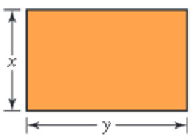
La proporción áurea del rectángulo ilustrado arriba se define por: \(\frac{x}{y}=\frac{y}{x+y}\). Obtenga las dimensiones aproximadas de la hoja de papel rectangular que contiene 100 \(pulg^2\) de área y que satisface la proporción áurea. Seleccione cuáles de las siguientes afirmaciones son verdaderas:
¡Excelente! Las dimensiones de la hoja son \(7.86 \times 12.72\) pulgadas.
Incorrecto. De la proporción se tiene \(\frac{y}{x} = \\phi \approx 1.618\). Dado que el área es \(x \times y = 100\), entonces \(x^2 \\phi = 100 \Rightarrow x = \frac{10}{\sqrt{\\phi}}\).
Intentar de nuevo
true
El radiador de un automóvil contiene 10 cuartos de galón de una mezcla de agua y 20 % de anticongelante. ¿Qué cantidad de esta mezcla debe vaciarse y reemplazarse por anticongelante puro para obtener una mezcla de 50 % en el radiador? Identifique cuáles de las siguientes afirmaciones son verdaderas:
¡Excelente! Deben drenarse \(3.75\) cuartos de galón de mezcla.
Incorrecto. Plantea la conservación del volumen de anticongelante: \(10(0.20) - x(0.20) + x(1.00) = 10(0.50) \Rightarrow 2 + 0.80x = 5\).
Intentar de nuevo
true
Encuentre dos números enteros cuya suma sea 50 y cuya diferencia sea 26. Seleccione cuáles de las siguientes afirmaciones son verdaderas:
¡Excelente! Los números son \(38\) y \(12\), y su producto es \(456\).
Incorrecto. Resuelve el sistema lineal simple \(2 \times 2\): \(x+y=50\) y \(x-y=26\). Suma las dos ecuaciones.
Intentar de nuevo
true
La diferencia de los cuadrados de dos números pares consecutivos es 92. Halle los dos números. Identifique cuáles de las siguientes afirmaciones son verdaderas:
¡Excelente! Los números pares consecutivos son \(22\) y \(24\).
Incorrecto. Si los números son \(2n\) y \(2n+2\): \((2n+2)^2 - (2n)^2 = 92 \Rightarrow 4n^2 + 8n + 4 - 4n^2 = 92 \Rightarrow 8n = 88\).
Intentar de nuevo
true
Encuentre tres números enteros consecutivos cuya suma sea 48. Seleccione cuáles de las siguientes afirmaciones son verdaderas:
¡Excelente! Los tres números consecutivos son \(15\), \(16\) y \(17\).
14.3.3 Preguntas 20 a 22 (Velocidades y Tiempos de Viaje)
Un auto viaja de A a B a una velocidad promedio de 55 mph, y regresa a una velocidad de 50 mph. En todo el viaje se lleva 7 horas. Halle la distancia recorrida entre A y B. (enunciado29). Identifique cuáles de las siguientes afirmaciones son verdaderas:
¡Excelente! La distancia es \(\frac{550}{3}\) millas y los tiempos de ida y vuelta son correctos.
Incorrecto. Las distancias son iguales. La ecuación de la suma de tiempos es: \(\frac{d}{55} + \frac{d}{50} = 7 \Rightarrow d \left(\frac{105}{2750}\right) = 7\).
Intentar de nuevo
true
Un jet vuela con el viento a favor entre Los Ángeles y Chicago en 3.5 h, y contra el viento de Chicago a Los Ángeles en 4 h. La velocidad del avión sin viento es de 600 mi/h. Calcule la velocidad del viento. ¿Qué distancia hay entre Los Ángeles y Chicago? Seleccione cuáles de las siguientes afirmaciones son verdaderas:
¡Excelente! El viento es de \(40\text{ mi/h}\) y la distancia es de \(2240\text{ millas}\).
Incorrecto. Como la distancia es igual en ambos trayectos, igualamos: \((600 + v_w) \times 3.5 = (600 - v_w) \times 4\).
Intentar de nuevo
true
Una mujer puede caminar al trabajo a una velocidad de 3 mph, o ir en bicicleta a 12 mph. Demora una hora más caminando que yendo en bicicleta. Encuentre el tiempo que se tarda en llegar al trabajo caminando. Identifique cuáles de las siguientes afirmaciones son verdaderas:
¡Excelente! Caminando tarda \(1.33\text{ horas}\) y la distancia es de \(4\text{ millas}\).
Incorrecto. Sea \(t\) el tiempo caminando. La distancia de ida es la misma: \(3 \times t = 12 \times (t-1) \Rightarrow 9t = 12\).
Intentar de nuevo
true
14.3.4 Preguntas 23 a 28 (Área Coordenada y Mezclas)
14.3.5 Área del Triángulo
Obtenga el área del triángulo rectángulo que se ilustra arriba, el cual está delimitado por las rectas: \(L_1: -4x + 3y = 9\), \(L_2: 3x + 4y = -38\) y \(L_3: -11x + 2y = 6\). Seleccione cuáles de las siguientes afirmaciones son verdaderas:
¡Excelente! Los catetos miden \(10\) y \(5\), por lo que el área es \(25\text{ UA}\).
Incorrecto. Halla los tres vértices cruzando las rectas: \(V_1(0,3)\), \(V_2(-6,-5)\) y \(V_3(-2,-8)\). Calcula la distancia de los catetos (10 y 5) y obtén el área.
Intentar de nuevo
true
Cierta marca de tierra para macetas contiene 10 % de humus y otra marca contiene 30 %. ¿Cuánto de cada tierra debe mezclarse para producir 2 pies cúbicos de tierra para macetas compuesta por 25 % de humus? Identifique cuáles de las siguientes afirmaciones son verdaderas:
¡Excelente! Se requieren \(0.5\text{ pies}^3\) de humus al \(10\%\) y \(1.5\text{ pies}^3\) al \(30\%\).
Incorrecto. Plantea el sistema lineal: \(x+y=2\) y \(0.10x + 0.30y = 2(0.25) = 0.50\). Despeja \(x\) e \(y\).
Intentar de nuevo
true
Un carnicero vende carne molida de res de cierta calidad a $3.95 y de otra calidad a $4.20 la libra. Quiere mezclar las dos calidades para obtener una mezcla que se venda a $4.15 la libra. ¿Qué porcentaje de carne de cada calidad debe usar? Seleccione cuáles de las siguientes afirmaciones son verdaderas:
¡Excelente! Se debe utilizar un \(20\%\) de la barata y un \(80\%\) de la cara.
Incorrecto. Sea \(p\) el porcentaje de la carne económica: \(3.95p + 4.20(1-p) = 4.15 \Rightarrow -0.25p = -0.05\).
Intentar de nuevo
true
14.3.6 Mezcla del Radiador V1
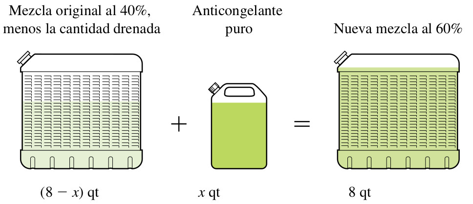
Un radiador contiene 8 cuartos de una mezcla de agua y anticongelante. Si 40% de la mezcla es anticongelante, ¿cuánto de la mezcla debe drenarse y cambiarse por anticongelante puro para que la mezcla resultante contenga 60% de anticongelante?. Ver la la Figura anterior. Identifique cuáles de las siguientes afirmaciones son verdaderas:
¡Excelente! Deben reemplazarse exactamente \(\frac{8}{3}\) cuartos de mezcla.
Incorrecto. Plantea el balance del anticongelante: \(8(0.40) - x(0.40) + x(1.00) = 8(0.60) \Rightarrow 3.2 + 0.60x = 4.8\).
Intentar de nuevo
true
14.3.7 Mezcla Química de Ácido V1
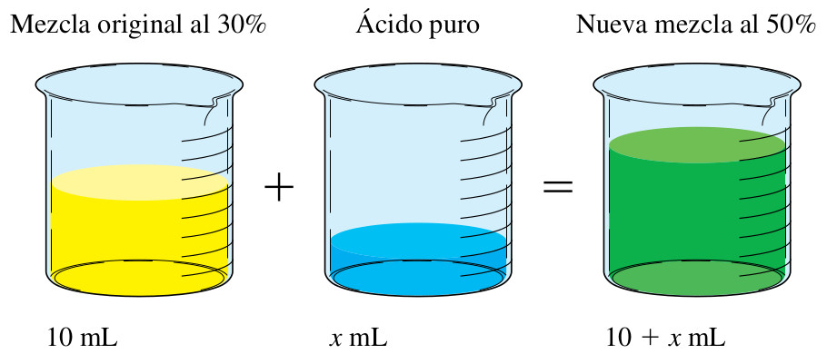
Un químico tiene 10 mililitros de una solución que contiene una concentración al 30% de ácido. ¿Cuántos mililitros de ácido puro deben agregarse para aumentar la concentración al 50%?. Ver la la Figura anterior. Seleccione cuáles de las siguientes afirmaciones son verdaderas:
¡Excelente! Se requieren \(4\text{ ml}\) de ácido puro, dando un total de \(14\text{ ml}\) de solución.
Incorrecto. Conservación del ácido puro: \(10(0.30) + x(1.00) = (10+x)(0.50) \Rightarrow 3 + x = 5 + 0.5x\).
Intentar de nuevo
true
El lado mayor de un triángulo es 2 cm más largo que el lado menor, el tercer lado tiene 5 cm menos que el doble de la longitud del lado menor. si el perímetro es 21 cm, ¿cuál es la longitud de cada lado? Identifique cuáles de las siguientes afirmaciones son verdaderas:
¡Excelente! Los lados miden \(6\text{ cm}, 7\text{ cm y } 8\text{ cm}\).
Incorrecto. Si \(x\) es el lado menor: \(x + (x+2) + (2x-5) = 21 \Rightarrow 4x - 3 = 21\).
Intentar de nuevo
true
14.3.8 Preguntas 29 a 31 (Visualizaciones y Cercados)
14.3.9 Medición del Árbol (Aserrador)
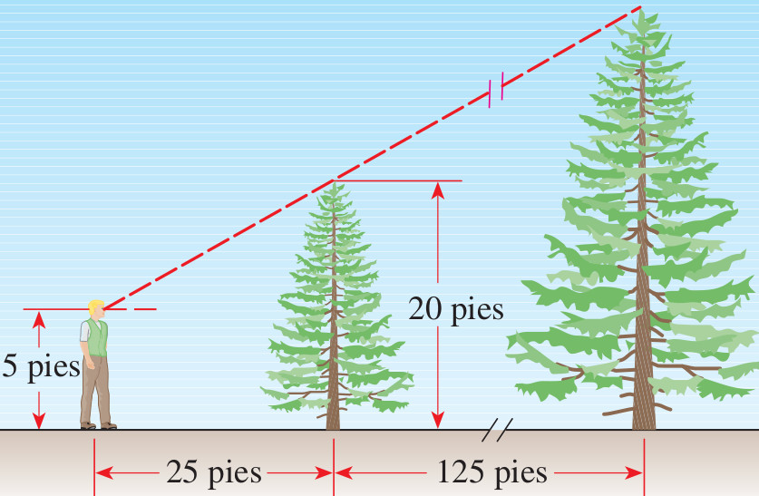
Un aserrador estima la altura de un árbol alto midiendo primero un árbol pequeño alejado 125 pies del árbol alto; luego se desplaza de tal manera que sus ojos estén en la visual de las copas de los árboles y mide después qué tan lejos está del árbol pequeño (véase la Figura anterior). Suponga que el árbol pequeño mide 20 pies de altura, el hombre está a 25 pies del árbol pequeño y sus ojos están a 5 pies por arriba del suelo. ¿Cuánto mide el árbol más alto? Seleccione cuáles de las siguientes afirmaciones son verdaderas:
¡Excelente! La altura es de \(95\) pies y la distancia total es de \(150\) pies.
Incorrecto. Resta la altura del ojo: \(20 - 5 = 15\text{ pies}\) para el pequeño. Por semejanza: \(\frac{h_a}{150} = \frac{15}{25} \Rightarrow h_a = 90\). Suma el ojo: \(90+5=95\text{ pies}\).
Intentar de nuevo
true
El área de un trapecio es de \(250\text{ pies}^2\) y la altura es de \(10\text{ pies}\). ¿cuál es la longitud de la base mayor si la base menor mide \(20\text{ pies}\)? Identifique cuáles de las siguientes afirmaciones son verdaderas:
¡Excelente! La base mayor es \(30\text{ pies}\) y el promedio de las bases es \(25\text{ pies}\).
Incorrecto. Aplica la fórmula del área del trapecio: \(250 = \frac{B+20}{2} \times 10 \Rightarrow 250 = 5(B+20)\).
Intentar de nuevo
true
14.3.10 Campo de Cercado
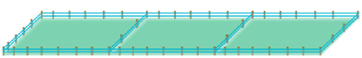
Un granjero desea encerrar un campo rectangular y dividirlo en tres partes iguales con cercado (ver la Figura anterior). Si la longitud del campo es tres veces el ancho y se requieren 1000 metros de cercado, ¿cuáles son las dimensiones del campo? Seleccione cuáles de las siguientes afirmaciones son verdaderas:
¡Excelente! El ancho es \(100\text{ m}\), el largo es \(300\text{ m}\) y el área es \(30000\text{ m}^2\).
Incorrecto. Se cumple \(L=3W\). El cercado total es \(4W + 2L = 1000\) (fiel al diagrama de divisiones paralelas al ancho). Sustituyendo: \(10W = 1000 \Rightarrow W=100\).
Intentar de nuevo
true
14.3.11 Preguntas 32 a 36 (Tasas de Trabajo y Perímetro)
Si Megan puede completar una tarea en 50 minutos trabajando sola y Colleen puede hacerlo en 25 min, ¿cuánto tiempo tardarán trabajando juntas? Identifique cuáles de las siguientes afirmaciones son verdaderas:
¡Excelente! El tiempo de trabajo juntas es de \(\frac{50}{3}\) minutos.
Incorrecto. Suma las tasas de trabajo: \(\frac{1}{50} + \frac{1}{25} = \frac{3}{50}\) tareas por minuto. El tiempo es la recíproca.
Intentar de nuevo
true
Si Karen puede recoger un sembradío de frambuesas en 6 horas y Stan puede hacerlo en 8 horas, ¿cuán rápido puede recoger el sembradío juntos? Seleccione cuáles de las siguientes afirmaciones son verdaderas:
Incorrecto. Suma las tasas: \(\frac{1}{6} + \frac{1}{8} = \frac{7}{24}\) de sembradío por hora. El tiempo es \(\frac{24}{7}\) horas.
Intentar de nuevo
true
Con dos mangueras de distinto diámetro se llena una tina en 40 minutos. Una manguera llena la tina en 90 minutos. Determine en cuánto tiempo la llenaría la otra manguera. Identifique cuáles de las siguientes afirmaciones son verdaderas:
¡Excelente! La manguera más rápida tarda \(72\) minutos en llenarla sola.
Incorrecto. Plantea la ecuación de tasas: \(\frac{1}{90} + \frac{1}{t} = \frac{1}{40} \Rightarrow \frac{1}{t} = \frac{1}{40} - \frac{1}{90} = \frac{5}{360}\).
Intentar de nuevo
true
Margot limpia su habitación en 50 minutos ella sola. Si Jeremy la ayuda, tarda 30 minutos.¿Cuánto tiempo tardará Jeremy en limpiar la habitación él sólo? Seleccione cuáles de las siguientes afirmaciones son verdaderas:
¡Excelente! Jeremy tarda \(75\) minutos y Margot es la más rápida (\(50\) min).
Incorrecto. Plantea la ecuación de tasas: \(\frac{1}{50} + \frac{1}{t} = \frac{1}{30} \Rightarrow \frac{1}{t} = \frac{1}{30} - \frac{1}{50} = \frac{2}{150}\).
Intentar de nuevo
true
El perímetro de un rectángulo es de 50 cm y el ancho es \(\frac{2}{3}\) de la longitud. Encuentre las dimensiones del rectángulo. Identifique cuáles de las siguientes afirmaciones son verdaderas:
¡Excelente! El largo es \(15\text{ cm}\), el ancho es \(10\text{ cm}\) y el área es \(150\text{ cm}^2\).
Incorrecto. Perímetro: \(2L + 2W = 50 \Rightarrow L + W = 25\). Como \(W = \frac{2}{3}L\), entonces \(L + \frac{2}{3}L = 25 \Rightarrow \frac{5}{3}L = 25\).
Intentar de nuevo
true
14.3.12 Preguntas 37 a 41 (Enunciados Nuevos Avanzados)
Un jet voló de Nueva York a los Ángeles, una distancia de 4200 kilómetros. La rapidez del viaje de regreso fue de 100 kilómetros por hora mayor que la de ida. Si el total del viaje tomó 13 horas, ¿cuál fue la rapidez de Nueva York a los Ángeles? (ida) Seleccione cuáles de las siguientes afirmaciones son verdaderas:
¡Excelente! La velocidad de ida es \(600\text{ km/h}\) y la de vuelta es \(700\text{ km/h}\).
Un fabricante de refrescos produce uno de naranja que es anunciado como de sabor natural aunque sólo contiene el 5% de jugo. Una nueva reglamentación gubernamental estipula que para que una bebida se anuncie como natural deberá contener por lo menos 10% de jugo de fruta. ¿Cuánto jugo de naranja puro debe agregar el fabricante a 900 galones de refresco de naranja, para cumplir con la nueva reglamentación?. Ver la Figura anterior. Identifique cuáles de las siguientes afirmaciones son verdaderas:
¡Excelente! Se agregan \(50\) galones de jugo de naranja puro.
Un cartel tiene impresa un área rectangular de 100 por 140 centímetros, enmarcada con una banda de ancho constante. El perímetro del cartel es 1.5 veces el del área impresa. ¿Cuál es el ancho de banda, y cuáles son las dimensiones del cartel? Seleccione cuáles de las siguientes afirmaciones son verdaderas:
¡Excelente! La banda mide \(30\text{ cm}\) y el cartel completo mide \(160 \times 200\text{ cm}\).
Mary hereda $100.000 y los invierte en dos certificados de depósito. Un certificado paga 6% y el otro 4.5% anual de interés simple. Si el interés total es de $5.025 al año, ¿cuánto dinero está invertido a cada una de las tasas? Identifique cuáles de las siguientes afirmaciones son verdaderas:
¡Excelente! Mary invirtió $35.000 al \(6\%\) y $65.000 al \(4.5\%\).
Incorrecto. Plantea la ecuación del interés simple: \(0.06x + 0.045(100000-x) = 5025 \Rightarrow 0.015x = 525\).
Intentar de nuevo
true
14.3.14 Vuelo de Pájaros
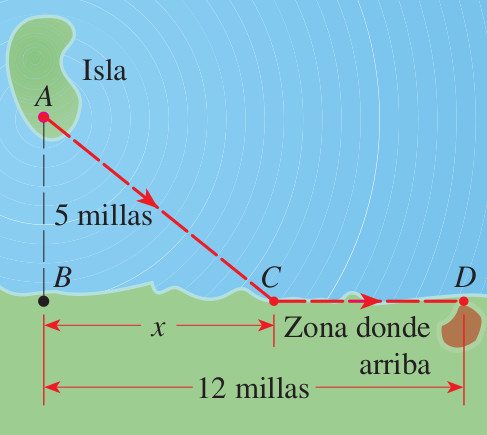
En una isla se libera un pájaro desde el punto A que se encuentra a 5 millas (en línea recta) del punto B más cercano de una costa. El ave vuela al punto C de la costa y luego a lo largo de la misma hasta su área de anidación en D. Suponga que el pájaro tiene una reserva de energía de 170 kilocalorías, y que utiliza 10 kilocalorías por milla al volar sobre la tierra y 14 kilocalorías por milla al hacerlo sobre el agua (ver la Figura anterior). Sabiendo que la distancia BD es de 12 millas, seleccione cuáles de las siguientes afirmaciones son verdaderas:
¡Excelente! Las distancias posibles a C son \(3.75\) y \(6.67\) millas y el vuelo directo requiere \(182\) kcal.
Incorrecto. Costo de energía: \(14\sqrt{x^2+25} + 10(12-x) = 170 \Rightarrow 14\sqrt{x^2+25} = 50 + 10x\). Resuelve la ecuación para obtener \(x=3.75\) o \(6.67\). Para el vuelo directo, \(AD = \sqrt{12^2+5^2} = 13\) millas, lo que da \(13 \times 14 = 182 > 170\).
Intentar de nuevo
true
14.3.15 Preguntas 42 a 44 (Fabricación de Recipiente y Demostraciones)
14.3.16 Hoja de Estaño
Se hace un recipiente con una pequeña hoja de estaño cuadrada cortando un cuadrado de 3 pulgadas de cada esquina y doblando los lados (ver la Figura anterior). La caja va a tener un volumen de 48 pulgadas cúbicas. Halle la longitud de uno de los lados de la hoja de estaño original. Identifique cuáles de las siguientes afirmaciones son verdaderas:
¡Excelente! La longitud es de \(10\) pulgadas y la base de la caja mide \(4 \times 4\) pulgadas.
Una de las pruebas más concisas del teorema de Pitágoras la dio el erudito indio Bhaskara (alrededor de 1150 AC). Presentó el diagrama que muestra la Figura anterior. Suponga que un cuadrado de lado c puede dividirse en cuatro triángulos rectángulos congruentes y un cuadrado de longitud b-a como se muestra en la Figura anterior. Demuestre algebraicamente que \(a^2+b^2=c^2\). Seleccione cuáles de las siguientes afirmaciones son verdaderas:
¡Excelente! La igualación \(c^2 = 2ab + b^2 - 2ab + a^2 = a^2+b^2\) es correcta.
Incorrecto. El cuadrado grande de lado \(c\) tiene área \(c^2\). Los componentes son 4 triángulos rectángulos de base \(a\) y altura \(b\) (área \(\frac{1}{2}ab\)) y el cuadrado central de lado \(b-a\) (área \((b-a)^2\)).
Intentar de nuevo
true
14.3.18 Pedazo de Tela Cortada
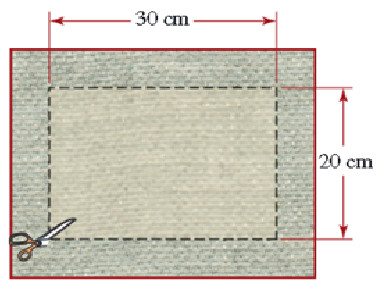
Se corta un borde uniforme de un pedazo de tela rectangular. El pedazo de tela resultante es de 20 por 30 cm ver la Figura anterior. Si el área original era el doble de la actual, halle el ancho del borde que se cortó. Identifique cuáles de las siguientes afirmaciones son verdaderas:
¡Excelente! El borde mide \(5\) cm y las dimensiones originales son \(30 \times 40\) cm.
Incorrecto. El área resultante es \(20 \times 30 = 600\text{ cm}^2\). El área original es \(1200\text{ cm}^2\). Ecuación: \((20+2x)(30+2x) = 1200 \Rightarrow 4x^2 + 100x - 600 = 0\).
Intentar de nuevo
true
14.4 Bloque 3: Rectas Tangentes, Secantes, Curvas y Círculos
14.4.1 Preguntas 45 a 47 (Líneas Curvas y Proyectiles)
14.4.2 Recta Secante a Parábola
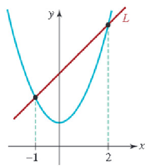
Halle una ecuación de la recta L que es secante a la curva \(y=x^2+1\) como se muestra en la Figura anterior. Seleccione cuáles de las siguientes afirmaciones son verdaderas:
¡Excelente! Los puntos de cruce son \((-1,2)\) y \((2,5)\), por lo que la secante es \(y=x+3\).
Incorrecto. Deduce los puntos comunes de la figura en la parábola para \(x=-1\) y \(x=2\) (\(A(-1,2)\) y \(B(2,5)\)). Aplica la fórmula de pendiente y la ecuación punto-pendiente.
Intentar de nuevo
true
14.4.3 Recta Tangente a Círculo
Un círculo está centrado en \(C(2,3)\) y tiene radio \(R=2\), representado en su forma ordinaria como \((x-2)^2 + (y-3)^2 = 4\). Si la recta tangente \(L\) toca al círculo en el punto \(P\) del círculo con coordenada \(x=3\) en la parte superior (ver el gráfico de la figura). Identifique cuáles de las siguientes afirmaciones son verdaderas:
¡Excelente! El punto de tangencia es \((3, 3+\sqrt{3})\) y la recta es \(y - (3+\sqrt{3}) = -\frac{\sqrt{3}}{3}(x-3)\).
Incorrecto. El punto superior P con \(x=3\) es \((3, 3+\sqrt{3})\). El radio tiene pendiente \(m_r = \frac{(3+\sqrt{3})-3}{3-2} = \sqrt{3}\). La tangente (perpendicular) tiene pendiente \(m_t = -\frac{1}{\sqrt{3}} = -\frac{\sqrt{3}}{3}\).
Intentar de nuevo
true
14.4.4 Tiro Parabólico del Proyectil
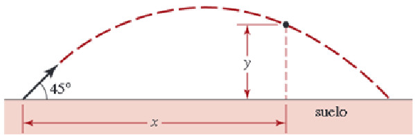
Si se lanza desde el suelo un objeto hacia arriba con un ángulo de 45° y una velocidad inicial de \(v_0\) metros por segundo, entonces la altura y en metros arriba del suelo a una distancia horizontal de x metros desde el punto del lanzamiento está dada por la fórmula (ver la Figura anterior). Si se lanza un proyectil con una velocidad inicial de 12 m/s, ¿a qué distancia del punto de lanzamiento aterrizará? Seleccione cuáles de las siguientes afirmaciones son verdaderas:
¡Excelente! Aterriza a \(\frac{720}{49}\) metros y la altura máxima se encuentra en su punto medio (\(x \approx 7.35\) m).
14.4.5 Preguntas 48 a 52 (Derivación y Tangentes de Elipses)
Demuestre que la ecuación de la recta tangente a la elipse \(\frac{x^2}{a^2} + \frac{y^2}{b^2} = 1\) en el punto \((u,w)\), está dada por \(\frac{xu}{a^2} + \frac{yw}{b^2} = 1\). Identifique cuáles de las siguientes afirmaciones son verdaderas:
¡Excelente! La derivación mediante implícitas de la elipse en \((u,w)\) está bien formulada.
Incorrecto. Diferenciamos implícitamente respecto a \(x\): \(\frac{2x}{a^2} + \frac{2yy'}{b^2} = 0 \Rightarrow y' = -\frac{b^2x}{a^2y}\). Evalúa en \((u,w)\) para hallar la pendiente y reemplaza en la ecuación de la recta.
Intentar de nuevo
true
Encuentre la ecuación de la tangente a la elipse \(\frac{x^2}{50} + \frac{y^2}{8} = 1\) en el punto \((5,-2)\). Seleccione cuáles de las siguientes afirmaciones son verdaderas:
¡Excelente! La recta tangente es \(2x-5y=20\) (o \(y=\frac{2}{5}x-4\)).
Incorrecto. Aplica la ecuación general del ejercicio anterior: \(\frac{x \times 5}{50} + \frac{y \times (-2)}{8} = 1 \Rightarrow \frac{x}{10} - \frac{y}{4} = 1\). Multiplica por 20 para simplificar.
Intentar de nuevo
true
Demuestre que la pendiente de la recta tangente a la elipse \(\frac{(x-h)^2}{a^2} + \frac{y^2}{b^2} = 1\) en el punto \((0,w)\) con \(w>0\), está dada por \(m=\frac{b^2h}{a^2w}\), y su ecuación es \(y=\frac{b^2h}{a^2w}x + w\). Identifique cuáles de las siguientes afirmaciones son verdaderas:
¡Excelente! La pendiente en \(x=0\) es \(m = \frac{b^2h}{a^2w}\) y el intercepto es \(w\).
Incorrecto. Derivada implícita respecto a \(x\): \(\frac{2(x-h)}{a^2} + \frac{2yy'}{b^2} = 0 \Rightarrow y' = -\frac{b^2(x-h)}{a^2y}\). Evalúa en \(x=0\) e \(y=w\).
Intentar de nuevo
true
Encuentre la ecuación de la recta tangente a la elipse \(\frac{(x-3)^2}{15}+\frac{y^2}{10}=1\) en el punto \((0,2)\). Seleccione cuáles de las siguientes afirmaciones son verdaderas:
¡Excelente! La recta tangente es \(y = x + 2\), la cual tiene una pendiente unitaria.
Incorrecto. Aplica la fórmula general deducida en el ejercicio anterior con \(h=3, w=2, a^2=15\) y \(b^2=10 \Rightarrow m = \frac{10 \times 3}{15 \times 2} = 1\).
Intentar de nuevo
true
Demuestre que la pendiente de la recta tangente a la elipse trasladada general \(\frac{(x-h)^2}{a^2} + \frac{(y-k)^2}{b^2} = 1\) en el punto \((x_1,y_1)\), está dada por \(m=-\frac{b^2(x_{1}-h)}{a^2(y_{1}-k)}\). Identifique cuáles de las siguientes afirmaciones son verdaderas:
¡Excelente! La derivada y la pendiente de la recta tangente en \((x_1,y_1)\) son exactas.
Incorrecto. Al realizar la diferenciación implícita de la elipse respecto a \(x\): \(\frac{2(x-h)}{a^2} + \frac{2(y-k)y'}{b^2} = 0\). Despeja \(y'\) y evalúa en \((x_1,y_1)\).
Intentar de nuevo
true
14.4.6 Preguntas 53 a 58 (Cálculo de Tangentes Avanzadas)
Obtener la recta tangente a una elipse en el punto P indicado en la Figura anterior, la cual está centrada en \(C(2,3)\) y tiene semi-ejes \(a=3\) y \(b=2\), representada como \(\frac{(x-2)^2}{9} + \frac{(y-3)^2}{4} = 1\), con coordenada \(x=3\) en la parte superior. Seleccione cuáles de las siguientes afirmaciones son verdaderas:
¡Excelente! El punto es \(\left(3, 3+\frac{4\sqrt{2}}{3}\right)\) y la tangente es \(y - \left(3+\frac{4\sqrt{2}}{3}\right) = -\frac{\sqrt{2}}{6}(x-3)\).
Incorrecto. Evalúa \(x=3\) en la elipse para hallar la ordenada superior: \(\frac{1}{9} + \frac{(y-3)^2}{4} = 1 \Rightarrow y = 3 + \frac{4\sqrt{2}}{3}\). Aplica la fórmula general de pendiente: \(m = -\frac{4(3-2)}{9(\frac{4\sqrt{2}}{3})} = -\frac{\sqrt{2}}{6}\).
Intentar de nuevo
true
Obtener la recta tangente a un círculo en el punto P indicado en la Figura anterior, la cual está centrada en \(C(3,4)\) y tiene radio \(R=2\), representado como \((x-3)^2 + (y-4)^2 = 4\), con coordenada \(x=4\) en la parte inferior. Identifique cuáles de las siguientes afirmaciones son verdaderas:
¡Excelente! El punto es \((4, 4-\sqrt{3})\) y la recta tangente es \(y - (4-\sqrt{3}) = \frac{\sqrt{3}}{3}(x-4)\).
Incorrecto. Halla la ordenada inferior en \(x=4\): \((4-3)^2 + (y-4)^2 = 4 \Rightarrow (y-4)^2 = 3 \Rightarrow y = 4-\sqrt{3}\). El radio tiene pendiente \(m_r = -\sqrt{3}\), por lo que la tangente perpendicular tiene pendiente \(m_t = \frac{\sqrt{3}}{3}\).
Intentar de nuevo
true
Calcule una ecuación para la tangente a la circunferencia en el punto (13,-4). ¿En qué otro punto de la circunferencia una tangente será paralela a la tangente que del inciso anterior? (sabiendo que la circunferencia es \(x^2+y^2=185\)). Seleccione cuáles de las siguientes afirmaciones son verdaderas:
¡Excelente! La tangente es \(13x-4y=185\) y la paralela se ubica en \((-13,4)\).
Incorrecto. La recta tangente en el punto \((x_1, y_1)\) para \(x^2+y^2=r^2\) es \(x x_1 + y y_1 = r^2\). El punto diametralmente opuesto tiene coordenadas de signos opuestos \((-x_1, -y_1) = (-13, 4)\).
Intentar de nuevo
true
14.4.7 Circunferencia y Recta V4
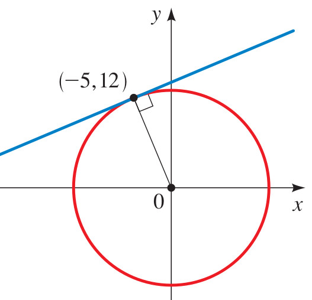
Calcule las ecuaciones de la circunferencia y de la recta para la Figura anterior, sabiendo que corresponden al Ejercicio 129 de la pág. 133 del libro de Stewart. Identifique cuáles de las siguientes afirmaciones son verdaderas:
¡Excelente! La circunferencia es \(x^2+y^2=25\) y la recta es \(3x+4y=25\).
Incorrecto. Se deduce de la figura que el círculo tiene centro en el origen y pasa por el punto \((3,4)\), dando la ecuación \(x^2+y^2=3^2+4^2=25\). La recta es tangente en \((3,4)\), por lo que su ecuación es \(3x+4y=25\).
Intentar de nuevo
true
Halle las ecuaciones de las rectas que pasan por (0,4) que son tangentes al círculo \(x^{2}+y^{2}=4\). Seleccione cuáles de las siguientes afirmaciones son verdaderas:
¡Excelente! Las rectas tangentes son \(y = \pm \sqrt{3}x + 4\) y los puntos de contacto son \((\pm\sqrt{3}, 1)\).
Incorrecto. Escribe la recta como \(y = mx+4\). Reemplaza en el círculo y exige que el discriminante de la ecuación cuadrática resultante sea cero: \(\Delta = 64m^2 - 48(1+m^2) = 0 \Rightarrow 16m^2 = 48 \Rightarrow m = \pm \sqrt{3}\).
Intentar de nuevo
true
14.4.8 Circunferencia y Recta V5
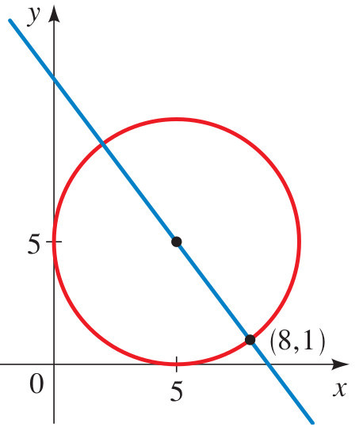
Calcule las ecuaciones de la circunferencia y de la recta para la Figura anterior, sabiendo que corresponden al Ejercicio 44 de la pág. 485 del libro de Stewart. Identifique cuáles de las siguientes afirmaciones son verdaderas:
¡Excelente! La circunferencia es \((x-3)^2+y^2=9\) y la recta es \(y = \frac{\sqrt{3}}{3}x\).
Incorrecto. El círculo tiene centro en \((3,0)\) y radio \(3\), dando la ecuación \((x-3)^2+y^2=9\). La recta pasa por \((0,0)\) y forma un ángulo de \(30^o\) con el eje horizontal, dando la pendiente \(\tan(30^o) = \frac{\sqrt{3}}{3}\).
Intentar de nuevo
true
14.5 Bloque 4: Aplicaciones Varias de Funciones y Desigualdades
14.5.1 Preguntas 59 a 64 (Aplicaciones en Ingeniería y Física)
14.5.2 Avión Sónico (Número de Mach)
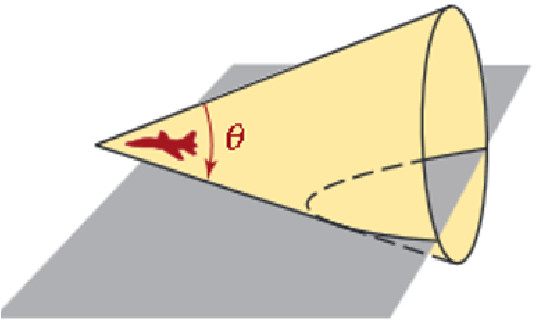
La relación de la velocidad de un avión con la velocidad del sonido se llama número de Mack, M, del avión. Si M>1, el avión produce ondas sonoras que forma un cono en movimiento, como se ve en la Figura anterior. Un estampido sónico se oye en la intersección del cono con el suelo. Si el ángulo del vértice del cono es θ, entonces \(sen\left(\frac{\theta}{2}\right)=\frac{1}{M}\). Si \(\theta=\frac{\pi}{6}\), calcule el valor exacto del número de Mach. Seleccione cuáles de las siguientes afirmaciones son verdaderas:
¡Excelente! El número de Mach exacto es \(\sqrt{6}+\sqrt{2}\) (aproximadamente \(3.86\)).
Incorrecto. Si \(\theta=\pi/6\), entonces \(\theta/2 = \pi/12 = 15^o\). Calculamos \(\sin(15^o) = \sin(45^o-30^o) = \frac{\sqrt{6}-\sqrt{2}}{4}\). El número de Mach es la recíproca: \(M = \frac{4}{\sqrt{6}-\sqrt{2}} = \sqrt{6}+\sqrt{2}\).
Intentar de nuevo
true
Si 7 veces el cuadrado de un número positivo se reduce en 3, el resultado es mayor que 60.¿Qué puede determinarse sobre el número? Identifique cuáles de las siguientes afirmaciones son verdaderas:
¡Excelente! El número positivo debe ser mayor que \(3\) (\(x > 3\)).
Incorrecto. Desigualdad: \(7x^2 - 3 > 60 \Rightarrow 7x^2 > 63 \Rightarrow x^2 > 9\). Al ser un número positivo, la solución única es \(x > 3\).
Intentar de nuevo
true
14.5.3 Desigualdad del Rectángulo
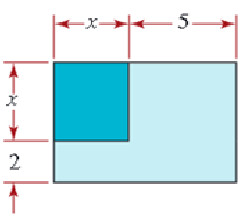
Los lados de un cuadrado se extienden para formar un rectángulo. como se muestra en la Figura anterior, un lado se extiende 2 cm y el otro 5 cm. Si el área del rectángulo resultante es menor de 130 cm², ¿cuáles son la posibles longitudes de un lado del cuadrado original? Seleccione cuáles de las siguientes afirmaciones son verdaderas:
¡Excelente! El intervalo es \(0 < x < 10\text{ cm}\) y la factorización es correcta.
Incorrecto. El área del rectángulo es \((x+2)(x+5) < 130 \Rightarrow x^2+7x-120 < 0 \Rightarrow (x+15)(x-10) < 0\). Dado que la longitud del lado debe ser mayor que cero, la solución es \(0 < x < 10\).
Intentar de nuevo
true
La suma de dos números es 33 y su cociente es \(\frac{5}{6}\). Halle los dos números. Identifique cuáles de las siguientes afirmaciones son verdaderas:
¡Excelente! Los números son \(15\) y \(18\), y su diferencia es \(3\).
Incorrecto. Plantea el sistema: \(x+y=33\) y \(\frac{x}{y}=\frac{5}{6} \Rightarrow 6x = 5y\). Reemplazando se obtiene \(x=15\) e \(y=18\).
Intentar de nuevo
true
14.5.4 Cilindro Inscrito en Esfera
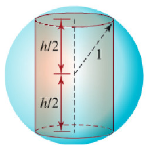
Un cilindro circular de altura h está inscrito en una esfera de radio 1 como se ilustra en la Figura anterior. Exprese el volumen del cilindro como una función de h. Seleccione cuáles de las siguientes afirmaciones son verdaderas:
¡Excelente! El volumen es \(V(h) = \pi\left(1 - \frac{h^2}{4}\right)h\) y el dominio físico es \(0 < h < 2\).
Incorrecto. El volumen del cilindro es \(V = \pi r^2 h\). Usando el Teorema de Pitágoras en el triángulo de la esfera: \(r^2 + \left(\frac{h}{2}\right)^2 = 1^2 \Rightarrow r^2 = 1 - \frac{h^2}{4}\). Reemplazando da la función.
Intentar de nuevo
true
14.5.5 Arco Parabólico del Puente
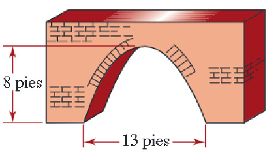
Determine la función cuadrática que describe el arco parabólico que se ilustra en la Figura anterior. Identifique cuáles de las siguientes afirmaciones son verdaderas:
¡Excelente! La función es \(y = -\frac{1}{10}x^2 + 10\), con apoyos en \(\pm 10\).
Incorrecto. Ubicando el vértice en el origen superior \((0,10)\), la parábola es \(y = ax^2 + 10\). Dado que corta al suelo a 10 metros del centro (\(x=\pm 10\)): \(0 = a(10)^2+10 \Rightarrow 100a = -10 \Rightarrow a = -\frac{1}{10}\).
Intentar de nuevo
true
14.5.6 Preguntas 65 a 69 (Geometría del Cubo, Círculos y Gas Ideal)
14.5.7 Diagonal del Cubo
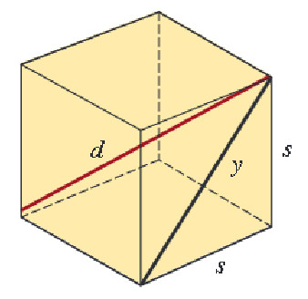
El diámetro d de un cubo es la distancia entre vértices opuestos como se muestra en la Figura anterior. Exprese el diámetro d como función de la longitud s de un lado del cubo. Seleccione cuáles de las siguientes afirmaciones son verdaderas:
¡Excelente! La diagonal del cubo es \(d(s) = s\sqrt{3}\) y la de una de las caras es \(s\sqrt{2}\).
Incorrecto. La diagonal de una de las caras cuadradas es \(y = \sqrt{s^2+s^2} = s\sqrt{2}\). La diagonal tridimensional que corta al cubo es \(d = \sqrt{y^2+s^2} = \sqrt{2s^2+s^2} = s\sqrt{3}\).
Intentar de nuevo
true
14.5.8 Área del Círculo Sombreado
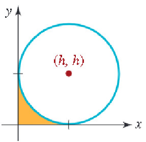
Exprese el área de la región sombreada de la Figura anterior como una función de h. (sabiendo que la figura representa un círculo de radio fijo r). Identifique cuáles de las siguientes afirmaciones son verdaderas:
¡Excelente! El área sombreada cumple la relación \(A(h) = \pi(r^2 - h^2)\).
Incorrecto. Se cumple que el radio del círculo interior sombreado es un cateto del triángulo rectángulo de hipotenusa \(r\) y cateto \(h \Rightarrow R^2 + h^2 = r^2 \Rightarrow R^2 = r^2 - h^2\). Su área es \(A = \pi R^2\).
Intentar de nuevo
true
14.5.9 Área entre Cuatro Círculos
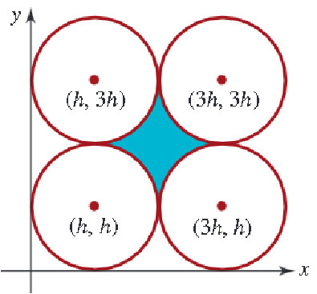
Considere los cuatro círculos que se ilustran en la Figura anterior. Exprese el área de la región sombreada entre ellos como función de h. (sabiendo que h es el radio de cada círculo). Seleccione cuáles de las siguientes afirmaciones son verdaderas:
¡Excelente! El área sombreada central es \(A(h) = h^2(4-\pi)\) y el área del cuadrado es \(4h^2\).
Incorrecto. El área del cuadrado que une los centros es de lado \(2h \Rightarrow A_c = (2h)^2 = 4h^2\). Resta los cuatro sectores circulares de radio \(h\) (\(4 \times \frac{1}{4}\pi h^2 = \pi h^2\)) para hallar el área sombreada.
Intentar de nuevo
true
Un alambre de 32 cm de longitud se cortó en dos pedazos, y cada parte se dobló para formar un cuadrado. El área total encerrada es de 34 cm². Determine la longitud de cada pedazo de alambre. Identifique cuáles de las siguientes afirmaciones son verdaderas:
¡Excelente! Los pedazos miden \(12\) y \(20\) cm, dando cuadrados de lados \(3\) y \(5\) cm.
Incorrecto. Sean \(L_1\) y \(L_2\) las longitudes de los pedazos: \(L_1 + L_2 = 32\). Lados: \(x = L_1/4\) e \(y = L_2/4\). Área total: \(\left(\frac{L_1}{4}\right)^2 + \left(\frac{32-L_1}{4}\right)^2 = 34\).
Intentar de nuevo
true
Para un gas ideal a baja presión, el volumen V a T grados Celsius está dado por: \(V=V_{0}\Big(1+\dfrac{T}{273.15}\Big)\) donde \(V_{0}\) es el volumen a cero grados Celsius. ¿A qué temperatura es \(V=\dfrac{3}{4}V_{0}\) para un gas ideal a baja presión? Seleccione cuáles de las siguientes afirmaciones son verdaderas:
¡Excelente! La temperatura calculada es de \(-68.2875\text{ °C}\) (aproximadamente \(-68.29\text{ °C}\)).
Para ver el análisis de tu desempeño en esta prueba, haz clic en el siguiente botón. El sistema evaluará tus respuestas y te proporcionará recomendaciones personalizadas.